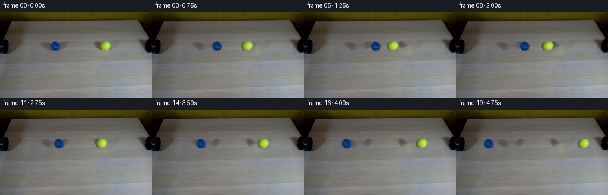
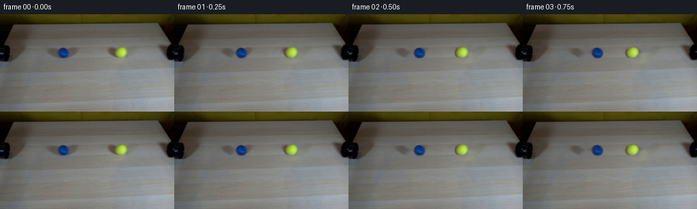

CODING AGENTS AS PIXEL WORLD MODELS
traex/GPT-5.6-Sol · 0032
点击播放 · 原生 RGB 像素
逐轮保存的候选
回放视频、检查图与代码变化。
每份候选均可单独播放。实际图片检查记录在下方工具轨迹中。
候选 01播放与检查图
点击播放 · 原生 RGB 像素


展开代码变化
--- 上一保存版本
+++ 本次保存版本
@@ -0,0 +1,117 @@
+from pathlib import Path
+import cv2
+import numpy as np
+from PIL import Image
+import artifact_io
+
+CASE_DIR = Path(__file__).resolve().parent
+N, H, W = 20, 144, 256
+
+
+def soft_object_alpha(rgb, center, radii, hue_range, sat_floor, sat_full):
+ """Recover a soft matte from the strongly coloured ball in the source."""
+ hsv = cv2.cvtColor(rgb, cv2.COLOR_RGB2HSV).astype(np.float32)
+ yy, xx = np.mgrid[:H, :W].astype(np.float32)
+ cx, cy = center
+ rx, ry = radii
+ spatial = np.clip((1.08 - np.sqrt(((xx-cx)/rx)**2 + ((yy-cy)/ry)**2)) / .13, 0, 1)
+ hue = hsv[..., 0]
+ hue_ok = ((hue >= hue_range[0]) & (hue <= hue_range[1])).astype(np.float32)
+ chroma = np.clip((hsv[..., 1] - sat_floor) / (sat_full - sat_floor), 0, 1)
+ matte = spatial * chroma * hue_ok
+ # Preserve the solid interiors, while retaining the photographed antialiasing.
+ matte = cv2.GaussianBlur(matte, (3, 3), .32)
+ return np.clip(matte, 0, 1)
+
+
+def translated(layer, dx, dy, interpolation=cv2.INTER_CUBIC):
+ M = np.float32([[1, 0, dx], [0, 1, dy]])
+ return cv2.warpAffine(layer, M, (W, H), flags=interpolation,
+ borderMode=cv2.BORDER_CONSTANT, borderValue=0)
+
+
+def add_shadow(frame, cx, cy, radius, strength=0.17):
+ """Small soft tabletop contact shadow, fixed relative to the moving sphere."""
+ yy, xx = np.mgrid[:H, :W]
+ # Illumination comes from upper left in the source photograph.
+ sx, sy = cx + radius*.17, cy + radius*.76
+ a = strength * np.exp(-0.5*(((xx-sx)/(radius*.70))**2 + ((yy-sy)/(radius*.20))**2))
+ # Warm grey shadow rather than synthetic black.
+ shade = np.array([45., 43., 39.], dtype=np.float32)
+ return frame*(1-a[..., None]) + shade*a[..., None]
+
+
+def main():
+ source = np.asarray(Image.open(CASE_DIR / 'first_frame.png').convert('RGB'), dtype=np.uint8)
+ assert source.shape == (H, W, 3)
+
+ # Centres and silhouettes measured from the source-frame chroma components.
+ blue_c = (92.75, 56.95)
+ yellow_c = (176.75, 56.05)
+ blue_a = soft_object_alpha(source, blue_c, (8.6, 8.0), (92, 132), 18, 76)
+ yellow_a = soft_object_alpha(source, yellow_c, (10.2, 8.7), (16, 48), 22, 82)
+
+ # Remove the original balls and their tiny contact shadows. TELEA reconstructs
+ # the locally smooth, lightly textured tabletop from all sides of each footprint.
+ hole = np.zeros((H, W), np.uint8)
+ cv2.ellipse(hole, (93, 57), (12, 11), 0, 0, 360, 255, -1)
+ cv2.ellipse(hole, (177, 56), (13, 11), 0, 0, 360, 255, -1)
+ base = cv2.inpaint(source, hole, 4.0, cv2.INPAINT_TELEA).astype(np.float32)
+
+ # Recover foreground colour (rather than moving old tabletop fringe pixels).
+ def foreground(alpha):
+ a = alpha[..., None]
+ safe = np.maximum(a, .10)
+ fg = (source.astype(np.float32) - (1-a)*base) / safe
+ # Values with essentially no matte do not contribute after premultiplication.
+ return np.clip(fg, 0, 255) * a
+
+ blue_pm = foreground(blue_a)
+ yellow_pm = foreground(yellow_a)
+
+ frames = []
+ collision_frame = 6.0
+ speed = 5.5
+ blue_contact_x, yellow_contact_x = 126.25, 143.25
+
+ for i in range(N):
+ if i == 0:
+ # Contract requirement: preserve every source pixel exactly.
+ frames.append(source.copy())
+ continue
+
+ if i <= collision_frame:
+ bx = blue_c[0] + speed*i
+ yx = yellow_c[0] - speed*i
+ else:
+ # Equal masses in a head-on elastic impact exchange velocity: the
+ # differently coloured balls therefore visibly reverse at equal speed.
+ bx = blue_contact_x - speed*(i-collision_frame)
+ yx = yellow_contact_x + speed*(i-collision_frame)
+
+ # The source centres differ by under one pixel. Keep that real camera-plane
+ # alignment throughout; at contact their silhouettes just touch.
+ by, yyel = blue_c[1], yellow_c[1]
+ canvas = base.copy()
+ canvas = add_shadow(canvas, bx, by, 8.2, .16)
+ canvas = add_shadow(canvas, yx, yyel, 9.0, .15)
+
+ for pm, alpha, origin, cx, cy in (
+ (blue_pm, blue_a, blue_c, bx, by),
+ (yellow_pm, yellow_a, yellow_c, yx, yyel),
+ ):
+ dx, dy = cx-origin[0], cy-origin[1]
+ wa = translated(alpha, dx, dy)[..., None]
+ wp = translated(pm, dx, dy)
+ canvas = wp + canvas*(1-wa)
+
+ frames.append(np.clip(np.rint(canvas), 0, 255).astype(np.uint8))
+
+ frames = np.stack(frames)
+ assert frames.shape == (N, H, W, 3) and frames.dtype == np.uint8
+ assert np.array_equal(frames[0], source)
+ artifact_io.save(frames, CASE_DIR)
+
+
+if __name__ == '__main__':
+ main()
候选 02播放与检查图
可观测工具轨迹
实际执行的命令与返回图片。
命令 1exit 0
/bin/bash -lc "cat GENERATION_RULES.md && printf '\\n--- PROMPT ---\\n' && cat prompt.txt"
命令 2exit 127
/bin/bash -lc "find . -maxdepth 2 -type f -printf '%p\\n' | sort && printf '\\n--- FILE INFO ---\\n' && file first_frame.png && python3 - <<'PY'
from PIL import Image
im=Image.open('first_frame.png')
print(im.mode, im.size)
print('extrema:', im.getextrema())
PY"命令 3exit 0
/bin/bash -lc "sed -n '1,240p' artifact_io.py"
命令 4exit 0
/bin/bash -lc "python3 - <<'PY'
from PIL import Image
import numpy as np
im=np.asarray(Image.open('first_frame.png').convert('RGB'))
print('shape',im.shape,'dtype',im.dtype)
print('extrema',[(int(im[:,:,i].min()),int(im[:,:,i].max()),float(im[:,:,i].mean()),float(im[:,:,i].std())) for i in range(3)])
# sampled grid RGB and brightness
for y in range(0,144,12):
print('y',y, ['%02x%02x%02x'%tuple(im[y,x]) for x in range(0,256,16)])
# dominant quantized colors
q=(im//16)*16
u,c=np.unique(q.reshape(-1,3),axis=0,return_counts=True)
for i in np.argsort(c)[-30:][::-1]: print(c[i],u[i])
PY"命令 5exit 0
/bin/bash -lc "python3 - <<'PY' mods=['cv2','numpy','PIL','scipy','skimage','imageio','matplotlib'] for m in mods: try: x=__import__(m); print(m,'yes',getattr(x,'__version__','')) except Exception as e: print(m,'no',e) PY"
命令 6exit 0
/bin/bash -lc "python3 - <<'PY'
import cv2, numpy as np
from PIL import Image
im=np.asarray(Image.open('first_frame.png').convert('RGB')); hsv=cv2.cvtColor(im,cv2.COLOR_RGB2HSV)
# report sat pixels comps and hue bins
for label,mask in [
('blue',(hsv[:,:,0]>85)&(hsv[:,:,0]<135)&(hsv[:,:,1]>80)&(hsv[:,:,2]>35)),
('yellow',(hsv[:,:,0]>18)&(hsv[:,:,0]<50)&(hsv[:,:,1]>70)&(hsv[:,:,2]>50)),
('sat',(hsv[:,:,1]>80)&(hsv[:,:,2]>35))]:
m=mask.astype(np.uint8)
n,L,st,cen=cv2.connectedComponentsWithStats(m,8)
print('\\n',label,'total',m.sum())
for i in sorted(range(1,n),key=lambda i:st[i,4],reverse=True)[:15]: print(' ',st[i].tolist(),cen[i].round(2).tolist())
print('\\nHue hist sat>60')
mask=(hsv[:,:,1]>60)&(hsv[:,:,2]>30)
for h in range(0,180,5):
c=((hsv[:,:,0]>=h)&(hsv[:,:,0]<h+5)&mask).sum()
if c: print(h,c)
PY"命令 7exit 0
/bin/bash -lc "python3 - <<'PY'
from PIL import Image
import numpy as np, cv2
im=np.asarray(Image.open('first_frame.png').convert('RGB'))
g=cv2.cvtColor(im,cv2.COLOR_RGB2GRAY)
# ascii edges/downsample luminance and sat/hue object map
hsv=cv2.cvtColor(im,cv2.COLOR_RGB2HSV)
chars=' .:-=+*#%@'
for name,a in [('lum',g),('edge',cv2.Canny(g,40,100))]:
print('\\n---',name,'---')
a=cv2.resize(a,(64,36),interpolation=cv2.INTER_AREA)
for row in a:
print(''.join(chars[min(9,int(v)*10//256)] for v in row))
print('\\n--- hues ---')
for yy in range(0,144,3):
s=''
for xx in range(0,256,4):
crop=hsv[yy:yy+3,xx:xx+4]; H,S,V=np.median(crop.reshape(-1,3),axis=0)
if S<60 or V<35: c=' '
elif 85<=H<=135:c='B'
elif 15<=H<=50:c='Y'
elif H<15 or H>170:c='R'
elif 50<H<85:c='G'
else:c='?'
s+=c
print(s)
PY"命令 8exit 1
/bin/bash -lc "python3 - <<'PY'
from PIL import Image
import numpy as np
im=np.asarray(Image.open('first_frame.png').convert('RGB'))
# exact region print ansi? dump neighborhoods stats and RGB around objects
for cy,cx,name in [(58,96,'blue'),(58,177,'yellow'),(55,8,'left'),(55,247,'right')]:
print('\\n',name)
for y in range(cy-18,cy+19,3):
print(y, ['%02x%02x%02x'%tuple(im[y,x]) for x in range(cx-18,cx+19,3)])
PY"命令 9exit 0
/bin/bash -lc "python3 - <<'PY'
from PIL import Image
import numpy as np, cv2
im=np.asarray(Image.open('first_frame.png').convert('RGB'))
g=cv2.cvtColor(im,cv2.COLOR_RGB2GRAY)
for y in [15,20,25,30,35,40,45,48,50,52,55,58,60,62,65,68,70]:
print('\\ny=',y)
for x in range(0,256,8):
a=im[y:y+2,x:x+8].mean((0,1)).astype(int); print('%02x%02x%02x'%tuple(a),end=' ')
print()
PY"命令 10exit 0
/bin/bash -lc "python3 - <<'PY'
from PIL import Image
import cv2,numpy as np
im=np.asarray(Image.open('first_frame.png').convert('RGB')); g=cv2.cvtColor(im,cv2.COLOR_RGB2GRAY)
# connected dark components in middle scene
for th in [15,25,35,45,55,65,75,85]:
m=((g<th)&(np.indices(g.shape)[0]>14)&(np.indices(g.shape)[0]<75)).astype('uint8')
n,L,s,c=cv2.connectedComponentsWithStats(m,8)
print('\\nth',th)
for i in sorted(range(1,n),key=lambda i:s[i,4],reverse=True)[:8]:
if s[i,4]>3: print(s[i].tolist(),c[i].round(1).tolist())
PY"命令 11exit 0
/bin/bash -lc "cat > generate.py <<'PY'
from pathlib import Path
import cv2
import numpy as np
from PIL import Image
import artifact_io
CASE_DIR = Path(__file__).resolve().parent
N, H, W = 20, 144, 256
def soft_object_alpha(rgb, center, radii, hue_range, sat_floor, sat_full):
\"\"\"Recover a soft matte from the strongly coloured ball in the source.\"\"\"
hsv = cv2.cvtColor(rgb, cv2.COLOR_RGB2HSV).astype(np.float32)
yy, xx = np.mgrid[:H, :W].astype(np.float32)
cx, cy = center
rx, ry = radii
spatial = np.clip((1.08 - np.sqrt(((xx-cx)/rx)**2 + ((yy-cy)/ry)**2)) / .13, 0, 1)
hue = hsv[..., 0]
hue_ok = ((hue >= hue_range[0]) & (hue <= hue_range[1])).astype(np.float32)
chroma = np.clip((hsv[..., 1] - sat_floor) / (sat_full - sat_floor), 0, 1)
matte = spatial * chroma * hue_ok
# Preserve the solid interiors, while retaining the photographed antialiasing.
matte = cv2.GaussianBlur(matte, (3, 3), .32)
return np.clip(matte, 0, 1)
def translated(layer, dx, dy, interpolation=cv2.INTER_CUBIC):
M = np.float32([[1, 0, dx], [0, 1, dy]])
return cv2.warpAffine(layer, M, (W, H), flags=interpolation,
borderMode=cv2.BORDER_CONSTANT, borderValue=0)
def add_shadow(frame, cx, cy, radius, strength=0.17):
\"\"\"Small soft tabletop contact shadow, fixed relative to the moving sphere.\"\"\"
yy, xx = np.mgrid[:H, :W]
# Illumination comes from upper left in the source photograph.
sx, sy = cx + radius*.17, cy + radius*.76
a = strength * np.exp(-0.5*(((xx-sx)/(radius*.70))**2 + ((yy-sy)/(radius*.20))**2))
# Warm grey shadow rather than synthetic black.
shade = np.array([45., 43., 39.], dtype=np.float32)
return frame*(1-a[..., None]) + shade*a[..., None]
def main():
source = np.asarray(Image.open(CASE_DIR / 'first_frame.png').convert('RGB'), dtype=np.uint8)
assert source.shape == (H, W, 3)
# Centres and silhouettes measured from the source-frame chroma components.
blue_c = (92.75, 56.95)
yellow_c = (176.75, 56.05)
blue_a = soft_object_alpha(source, blue_c, (8.6, 8.0), (92, 132), 18, 76)
yellow_a = soft_object_alpha(source, yellow_c, (10.2, 8.7), (16, 48), 22, 82)
# Remove the original balls and their tiny contact shadows. TELEA reconstructs
# the locally smooth, lightly textured tabletop from all sides of each footprint.
hole = np.zeros((H, W), np.uint8)
cv2.ellipse(hole, (93, 57), (12, 11), 0, 0, 360, 255, -1)
cv2.ellipse(hole, (177, 56), (13, 11), 0, 0, 360, 255, -1)
base = cv2.inpaint(source, hole, 4.0, cv2.INPAINT_TELEA).astype(np.float32)
# Recover foreground colour (rather than moving old tabletop fringe pixels).
def foreground(alpha):
a = alpha[..., None]
safe = np.maximum(a, .10)
fg = (source.astype(np.float32) - (1-a)*base) / safe
# Values with essentially no matte do not contribute after premultiplication.
return np.clip(fg, 0, 255) * a
blue_pm = foreground(blue_a)
yellow_pm = foreground(yellow_a)
frames = []
collision_frame = 6.0
speed = 5.5
blue_contact_x, yellow_contact_x = 126.25, 143.25
for i in range(N):
if i == 0:
# Contract requirement: preserve every source pixel exactly.
frames.append(source.copy())
continue
if i <= collision_frame:
bx = blue_c[0] + speed*i
yx = yellow_c[0] - speed*i
else:
# Equal masses in a head-on elastic impact exchange velocity: the
# differently coloured balls therefore visibly reverse at equal speed.
bx = blue_contact_x - speed*(i-collision_frame)
yx = yellow_contact_x + speed*(i-collision_frame)
# The source centres differ by under one pixel. Keep that real camera-plane
# alignment throughout; at contact their silhouettes just touch.
by, yyel = blue_c[1], yellow_c[1]
canvas = base.copy()
canvas = add_shadow(canvas, bx, by, 8.2, .16)
canvas = add_shadow(canvas, yx, yyel, 9.0, .15)
for pm, alpha, origin, cx, cy in (
(blue_pm, blue_a, blue_c, bx, by),
(yellow_pm, yellow_a, yellow_c, yx, yyel),
):
dx, dy = cx-origin[0], cy-origin[1]
wa = translated(alpha, dx, dy)[..., None]
wp = translated(pm, dx, dy)
canvas = wp + canvas*(1-wa)
frames.append(np.clip(np.rint(canvas), 0, 255).astype(np.uint8))
frames = np.stack(frames)
assert frames.shape == (N, H, W, 3) and frames.dtype == np.uint8
assert np.array_equal(frames[0], source)
artifact_io.save(frames, CASE_DIR)
if __name__ == '__main__':
main()
PY
python3 generate.py
python3 - <<'PY'
from pathlib import Path
import numpy as np
from PIL import Image
z=np.load('pixels.npz')['pixels']
print('packed tensor', z.shape, z.dtype)
frames=np.stack([np.asarray(Image.open(f'frames/{i:02d}.png')) for i in range(20)])
src=np.asarray(Image.open('first_frame.png').convert('RGB'))
print('frames', frames.shape, frames.dtype, 'frame0 exact',np.array_equal(frames[0],src))
for i in range(20):
d=np.any(frames[i]"'!=src,axis=2)
ys,xs=np.where(d)
print(f'"'{i:02d}: changed={d.sum():4d}', ('bbox='+str((xs.min(),ys.min(),xs.max(),ys.max())) if len(xs) else ''))
PY"命令 12exit 0
/bin/bash -lc "python3 - <<'PY'
p='generate.py'
s=open(p).read().replace('blue_contact_x, yellow_contact_x = 126.25, 143.25','blue_contact_x, yellow_contact_x = 125.75, 143.75')
open(p,'w').write(s)
PY
python3 generate.py
python3 - <<'PY'
import cv2,numpy as np
from PIL import Image
frames=np.stack([np.asarray(Image.open(f'frames/{i:02d}.png')) for i in range(20)])
# component centroids based on color, confirm equal approach/rebound
for i,a in enumerate(frames):
hsv=cv2.cvtColor(a,cv2.COLOR_RGB2HSV)
bm=((hsv[:,:,0]>=92)&(hsv[:,:,0]<=132)&(hsv[:,:,1]>65)&(hsv[:,:,2]>30)).astype(np.uint8)
ym=((hsv[:,:,0]>=16)&(hsv[:,:,0]<=48)&(hsv[:,:,1]>65)&(hsv[:,:,2]>45)&(np.indices(hsv.shape[:2])[0]>35)).astype(np.uint8)
def cen(m):
n,L,s,c=cv2.connectedComponentsWithStats(m)
j=max(range(1,n),key=lambda j:s[j,4]); return c[j],s[j,4],s[j,:4]
try: bc,bs,bb=cen(bm)
except: bc=(np.nan,np.nan);bs=0;bb=[]
try: yc,ys,yb=cen(ym)
except: yc=(np.nan,np.nan);ys=0;yb=[]
print(f'{i:02d} B({bc[0]:6.2f},{bc[1]:5.2f}) n={bs:3} Y({yc[0]:6.2f},{yc[1]:5.2f}) n={ys:3}')
# quality output assertions
src=np.asarray(Image.open('first_frame.png').convert('RGB'))
print('exact0',np.array_equal(frames[0],src),'shape',frames.shape,'dtype',frames.dtype)
PY"保存候选 2 份；完成命令 12 次；可验证图片返回 0 张。原始 API 响应与完整日志保留在本地。